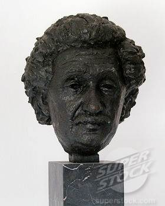
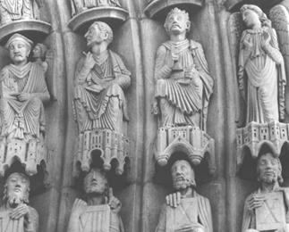

Ngày 14 tháng 3 năm 1923 là ngày lễ ngũ tuần của ông. Ông trốn Berlin từ mấy ngày trước để tránh các cuộc tiếp rước, chúc tụng, nhất là các cuộc phỏng vấn của các nhà báo. Ông lại khu trại mênh mông của một người bạn trên bờ sông Havel nghỉ ngơi vài ngày: chơi vĩ cầm, nấu ăn lấy, nhất là thả thuyền buồm trên dòng nước. Nhưng cả trong những lúc tiêu khiển, óc ông cũng không quên các bài toán, khi tìm ra được một lỗi nào, ông trở ngay về phòng giấy, hí hoáy làm lại.
Nhân dịp sinh nhật đó, các bạn thân của ông và một ngân hàng ở Berlin tặng ông một chiếc du thuyền rất đẹp, ông rưng rưng nước mắt, bảo: “Các bạn ấy mến tôi đến thế này ư?”
Khi trở về Berlin, ông thấy phòng giấy đầy những thiệp chúc thọ và quà cáp của mọi hạng người ở khắp nơi, thợ thuyền, sinh viên, các nhà bác học, thủ tướng Đức, vua Y Pha Nho, Hoàng đế Nhật… Và vinh dự lớn nhất: viện Thiên văn Vật lí Potsdam ở gần Berlin đã dựng cho ông một tượng đồng gọi là Tháp Einstein.

Tượng Einstein tại Tháp Einstein (một đài thiên văn vật lí)
trong Công viên Khoa học Albert Einstein ở Potsdam, Đức
Hội đồng thành phố Berlin muốn tặng ông một trại nhỏ ở ngoại ô, tại làng Caputh. Nhưng có một nhóm người phản đối, thủ tục kéo dài, ông viết thư từ chối:
- Thưa ông Đô trưởng, đời người ngắn ngủi quá mà nhà cầm quyền làm việc chậm chạp quá… Vậy tôi xin cảm ơn nhã ý cùng thịnh tình của ông. Ngày sinh nhật của tôi qua rồi, tôi không nhận vật tặng đó nữa.
Và ông phải bỏ tiền ra cất cho xong căn nhà ở Capth vì đã lỡ làm giấy với chủ đất.
Năm 1929 đó là năm vui nhất của ông ở Berlin, mà năm đó cũng chính là năm kinh tế bắt đầu khủng hoảng ở Mĩ rồi lan qua châu Âu, tới khắp thế giới. Hoa Kì không thể cho Đức vay tiền kiến thiết được nữa, các xưởng máy, nhà buôn ở Đức nối tiếp nhau đóng cửa, hàng mấy triệu người thất nghiệp, các ngân hàng bị phá sản. Dân chúng khốn khổ, bất bình, ủng hộ Hitler, đảng Quốc Xã phát triển rất mạnh, hô hào sự bạo động, diệt các tự do cá nhân, và tái võ trang.
Năm 1931, ông qua Mĩ hợp tác với các nhà bác học ở Viện Công nghệ Californie. Trong khi ghé New York, ông được mời tới giáo đường Riverside Church để coi hình ông tạc trên một bức tường cùng với các vị thánh và ba nhà bác học khác vĩ đại nhất lịch sử nhân loại[21]. Ông hỏi người dắt dẫn ông:
- Trong số các vị đó, phải chỉ có một mình tôi còn sống không?
Người đó đáp:
- Vâng. Cảm tưởng của giáo sư ra sao?
- Tiến bộ lắm. Một giáo đường Ki Tô mà tạc tượng một người Do Thái.
Nghĩa là ông mong rằng hết sự kì thị giữa hai tôn giáo, mà vinh dự ông được hưởng đó chính là vinh dự của cả dân tộc Do Thái chứ không phải của riêng ông.

Tượng Einstein trong Riverside Church ở New York
(hàng trên, thứ 2 từ phải qua trái)
Dĩ nhiên, ông buồn cho dân tộc ông bị đàn áp, phiêu bạt non hai ngàn năm, nhưng nếu là một dân tộc khác thì ông cũng xót xa như vậy. Ông không có tinh thần quốc gia nồng nhiệt như các người Do Thái khác, và khi có phong trào tập hợp các người Do Thái về Palestine để thành lập quốc gia Do Thái, thì ông tỏ vẻ lãnh đạm.
Hiển nhiên là ông muốn vượt lên trên quan niệm quốc gia mà đề cao tinh thần quốc tế.
Một nhà báo có lần hỏi ông:
- Giáo sư có thấy sự liên lạc nào giữa sự vinh quang và quốc tịch không?
Ông đáp:
- Tại sao khi nói tới các vĩ nhân thì người ta cứ nghĩ tới quốc tịch của họ. Một vĩ nhân Đức, một vĩ nhân Anh… cũng chỉ là một con người mà thôi, không phân biệt người nước này, người nước khác.
[21] Tức ngoài Einstein còn có: Hippocrates, Galileo và Darwin. (theo http://www.drew.edu/theological/2011/11/new-york-city-walking-tour-becomes-annual-part-of-gdr-orientation) (Ca_kiem và Goldfish).